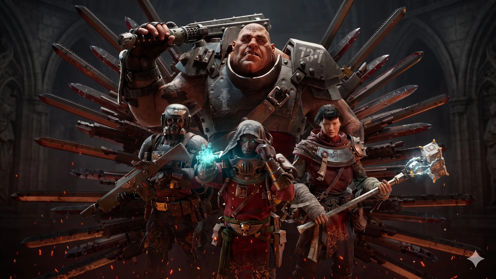

PS Plus June 2026 Free Games Announced — Grounded, Warhammer 40K Darktide & Nickelodeon All Star Brawl 2: Full Lineup Breakdown

Sony has officially announced the PlayStation Plus Essential free games for June 2026, and the lineup is a genuinely solid mix — a highly-rated co-op survival game making its PS Plus debut, a grimdark 4-player shooter that finally gets its PS5 moment, and a platform fighter for the family. All three games become available to claim from Tuesday, June 2, 2026, and are claimable through July 7.
June is also shaping up to be one of PlayStation's busiest months of the year — Days of Play 2026 is running simultaneously with major discounts across the PS Store, a State of Play is expected before mid-June, and the 007 First Light launch and Summer Game Fest are happening in the same window. If you're a PS Plus subscriber, now is a good time to be paying attention.
Table of Contents
- June 2026 PS Plus Lineup — Quick Overview
- Grounded Fully Yoked Edition — Obsidian's Survival Hit
- Warhammer 40,000: Darktide — Best Pick of the Month
- Nickelodeon All Star Brawl 2 — Platform Fighter Fun
- Claim May 2026 PS Plus Games Before They Expire
- PlayStation Days of Play 2026 — What to Expect
- Saints Row PS Store Deal
- State of Play June 2026 — What's Coming
- PS Plus Pricing in 2026
- Frequently Asked Questions
June 2026 PS Plus Lineup — Quick Overview
| Game | Platform | Genre | Metacritic | Players |
|---|---|---|---|---|
| Grounded Fully Yoked Edition | PS4 / PS5 | Survival / Co-op | 83 | 1–4 Online Co-op |
| Warhammer 40,000: Darktide | PS5 only | Co-op FPS | 78 | 1–4 Online Co-op |
| Nickelodeon All Star Brawl 2 | PS4 / PS5 | Platform Fighter | 73 | 1–4 Local + Online |
Available from: Tuesday, June 2, 2026
Claim deadline: Tuesday, July 7, 2026
⚠️ Claim May Games Before June 1
EA Sports FC 26, Wuchang: Fallen Feathers, and Nine Sols expire June 1, 2026. EA Sports FC 26 has an extended window through June 16. Don't miss them — go to your PlayStation Store library and add them now.
Grounded Fully Yoked Edition — Obsidian's Survival Hit
Grounded is the standout pick for PS Plus subscribers who haven't played it. Developed by Obsidian Entertainment — the studio known for Fallout: New Vegas, The Outer Worlds, and Pentiment — Grounded takes a premise that sounds absurd and executes it brilliantly: you're a teenager shrunk to the size of an ant in a suburban backyard, and you need to survive. That means building shelters from pebbles and acorn caps, crafting weapons from insect parts, and dealing with spiders that are now the size of buildings.
The Fully Yoked Edition is the complete version of the game including the substantial 1.4 update released in 2025. What that added: ant queen storyline and new underground ant colony areas, a New Game Plus mode for players who've completed the main story, expanded crafting options, and all previous updates including the Haze Lab and the Mantis update. The base game's story runs approximately 20 hours solo and significantly longer with co-op, since exploration tends to sprawl when you're playing with friends.
The co-op loop is genuinely excellent. Up to four players can join the same backyard and split responsibilities — one player base-building while others gather resources or explore. The game scales enemy health and spawn rates with player count, which keeps it challenging rather than trivially easy with a full team. Cross-play is supported, meaning PS5 players can game with PC and Xbox friends.
Grounded was originally an Xbox and PC exclusive when it launched in 2022. Its appearance on PS Plus marks one of the first times it's been widely accessible to PlayStation players — and for the price of an existing subscription, Fully Yoked Edition is a remarkable value. Metacritic score sits at 83, and the game has a large active community.
Also Read
More Gaming stories →Warhammer 40,000: Darktide — Best Pick of the Month
If you only have time for one game from this month's PS Plus lineup, Warhammer 40,000: Darktide is the one. Fatshark — the Swedish studio behind the extremely well-received Warhammer: Vermintide 2 — applied the same horde-slasher DNA to the 41st millennium setting, replacing medieval fantasy with grimdark science fiction. The result is one of the best co-op shooters available, and its inclusion in PS Plus June 2026 is a genuine win for subscribers who haven't played it yet.
The game is set on Tertium, an Imperial hive city that has been corrupted by Chaos — specifically Nurgle, the god of plague and decay. You play as one of five classes: Veteran Sharpshooter, Zealot Preacher, Psyker Psykinetic, Ogryn Skullbreaker, or the newer Veteran Operative. Each class plays distinctly — the Ogryn is a tank-melee powerhouse, the Psyker channels psychic force at the risk of going Perils of the Warp, the Zealot charges in with melee and fire, the Veteran provides precise ranged support. Class choice affects how you approach each mission significantly.
The mission structure involves 1-4 players fighting through procedurally populated levels with wave-management mechanics similar to Left 4 Dead — but with Warhammer's signature intensity and visual grotesquerie. Special enemies called Specials and Elites disrupt team cohesion in specific ways, requiring coordination to manage rather than just shooting everything. Difficulty scales from Sedition through Damnation, and the top-end Damnation missions are genuinely demanding co-op challenges.
The PS5 version launched with some late-game content gaps compared to PC, but Fatshark has patched those substantially. The Metacritic score of 78 reflects an early launch that had some technical issues on PC — the PS5 version, benefiting from all subsequent patches, is a smoother experience than those scores suggest. For PS Plus subscribers without a gaming PC, this is the definitive way to access what is now a polished, content-rich co-op shooter.
Nickelodeon All Star Brawl 2 — Platform Fighter Fun
Nickelodeon All Star Brawl 2 is the sequel to 2021's first game and addresses most of its predecessor's significant weaknesses. The original launched without voice acting — an odd choice for a game selling on the appeal of beloved cartoon characters — and the sequel fixes this with a full voiced roster. SpongeBob, Patrick, Sandy, Jimmy Neutron, Rocko, Garfield, Ren & Stimpy, and the Angry Beavers Norbert and Daggett are all here with their TV voices, which transforms how the game feels.
Mechanically, Brawl 2 is a platform fighter in the Super Smash Bros. tradition — knock opponents off the stage by building their damage percentage and landing a strong finishing blow. The roster covers Nickelodeon's history comprehensively, and the roster now has better move diversity than the first game. Cross-play is supported for online play, which helps significantly with matchmaking quality.
It's the weakest game in June's PS Plus lineup on pure critical merit, but it fills a specific gap: local multiplayer and family-friendly gaming. If you have kids or want something to play casually with people who don't game seriously, All Star Brawl 2 fills that role well. The 73 Metacritic score is fair — it's not as polished as the Nintendo platform fighters it's inspired by, but it's genuinely entertaining for what it is.
Key Takeaways — June 2026 PS Plus
- Three games available June 2: Grounded Fully Yoked Edition (PS4/PS5), Warhammer 40K Darktide (PS5), Nickelodeon All Star Brawl 2 (PS4/PS5). Claim by July 7.
- Best pick: Warhammer 40,000: Darktide for co-op shooter fans. Best overall value: Grounded Fully Yoked Edition — a 20+ hour survival game with excellent 4-player co-op, previously Xbox/PC exclusive.
- Urgent: Claim May 2026 PS Plus games (EA Sports FC 26, Wuchang, Nine Sols) before they expire June 1.
Claim May 2026 PS Plus Games Before They Expire
If you haven't already, go add the May 2026 PS Plus Essential games to your library right now — they disappear on June 1, 2026, which is days away. The May lineup was genuinely strong:
EA Sports FC 26 — The latest iteration of what used to be FIFA, including the full career mode, Ultimate Team, and Volta Football. EA Sports FC 26 has an extended availability window through June 16, so you have a bit more time on this one specifically. If you want to build a team and grind Ultimate Team matches, claim this before the extended deadline.
Wuchang: Fallen Feathers — An action RPG in the Souls-like tradition with a Ming Dynasty China setting and an original story. Strong visual design, demanding combat, and a distinctive weapon-focused progression system. One of the most interesting PS Plus additions of 2026 so far for action RPG fans.
Nine Sols — A 2D action-platformer from Red Candle Games with a distinctive Taoism-punk aesthetic — imagine Hollow Knight's gameplay depth in a world that mixes ancient Chinese mythology with science fiction. One of the best indie games offered through PS Plus in recent memory. If you haven't played it, claim it today before it leaves.
PlayStation Days of Play 2026 — What to Expect
PlayStation Days of Play 2026 is Sony's biggest annual sale event, running throughout June alongside the June PS Plus refresh. The sale traditionally offers discounts of up to 70% on select PS4 and PS5 titles, PS Plus subscription discounts for new members, and PlayStation Store credit deals through participating retailers.
The specific Days of Play 2026 dates and discount list haven't been announced at the time of writing, but based on the past four years, expect the sale to run from approximately June 2 to June 16, coinciding with the opening weeks of the PS Plus June window. Games that typically feature heavily in Days of Play sales include major first-party Sony titles, third-party AAA releases from the past year, and older catalogue games at steep discounts.
If you're planning to upgrade your PS Plus subscription from Essential to Extra or Premium, Days of Play is historically the best time to do it — Sony has offered discounted first-year upgrade pricing during this sale in 2023, 2024, and 2025.
Saints Row PS Store Deal
Alongside the June PS Plus free games, the deep-discount Saints Row PS Store deal deserves a mention for open-world fans. The 2022 Saints Row reboot — which had a divisive reception at launch but received substantial post-launch updates that addressed most of the core gameplay complaints — has been heavily discounted on the PlayStation Store in the lead-up to Days of Play 2026.
The PS Store Saints Row deal brings the base game to a fraction of its original launch price, making it an accessible entry point for the series. The post-launch patches improved driving physics, enemy AI, and mission variety significantly from the launch state. For players who passed on it in 2022 due to negative early reviews, the updated version at PS Store sale prices is worth reconsidering. The Saints Row universe — lowriders, superpowers, and absurdist open-world crime — is a distinct flavor from GTA, and at sale pricing it represents strong value.
State of Play June 2026 — What's Coming
Sony's State of Play showcase is expected in early to mid-June 2026, and the timing — sandwiched between Days of Play and Summer Game Fest — makes it one of PlayStation's most commercially important communications events of the year. While Sony hasn't confirmed a specific date, the pattern of State of Play events in 2025 and 2026 has been roughly every 6 to 8 weeks.
Expected areas of focus for the June 2026 State of Play: GTA 6 PS5 marketing — Sony has been the closer PlayStation partner for Rockstar's marketing cycle, and with Fall 2026 approaching, a major State of Play appearance for GTA 6 is widely anticipated. PlayStation Studios' upcoming slate — several first-party titles are expected to reveal or show extended footage at a pre-summer showcase. PSVR2 software updates — Sony has been supporting its VR platform more consistently in 2026 with indie and mid-tier releases that typically get State of Play announcements.
The June State of Play is also a natural moment for Sony to announce any PS Plus Extra or Premium additions beyond the Essential tier. PS Plus Extra in June 2026 has not been revealed at time of writing.
PS Plus Pricing in 2026
| PS Plus Tier | Monthly | 3-Month | Annual |
|---|---|---|---|
| Essential | $10.99 | $27.99 | $79.99 |
| Extra | $16.99 | $44.99 | $134.99 |
| Premium | $22.99 | $59.99 | $159.99 |
PS Plus Essential at $79.99 annually works out to approximately $6.67 per month. Given that June's lineup alone includes games worth a combined retail value exceeding $120 — Grounded Fully Yoked ($40), Darktide ($40), Nickelodeon Brawl 2 ($50) — the per-month value is strong when the lineup hits. Essential subscribers get three free games per month, online multiplayer access, and 100GB cloud storage for PS5 saves.
Days of Play 2026 is the best time to purchase or upgrade a PS Plus subscription if you're not currently subscribed — Sony typically offers first-year discounts of 25% to 33% on all tiers during this period.
Frequently Asked Questions
What are the PS Plus free games for June 2026?
Three games: Grounded Fully Yoked Edition (PS4/PS5), Nickelodeon All Star Brawl 2 (PS4/PS5), and Warhammer 40,000: Darktide (PS5 only). All three are available to add to your library from Tuesday, June 2, 2026 through July 7, 2026.
When can I download PS Plus June 2026 games?
The June 2026 PS Plus games go live on Tuesday, June 2, 2026. They replace the May lineup which expires June 1. Once you add them to your library, they stay accessible as long as your PS Plus subscription is active.
Which May 2026 PS Plus games expire soon?
EA Sports FC 26, Wuchang: Fallen Feathers, and Nine Sols expire June 1, 2026. EA Sports FC 26 has an extended window to June 16. Add them to your library from the PS Store before the deadline even if you don't plan to play immediately.
What is PlayStation Days of Play 2026?
PlayStation Days of Play is Sony's annual June sale event with discounts of up to 70% on PS4 and PS5 games, PS Store deals, and historically discounted PS Plus subscription upgrades. Expected to run from approximately June 2 to June 16, 2026 — the best time to buy or upgrade PS Plus.
Is Warhammer 40,000: Darktide worth playing?
Yes, especially at PS Plus price (free with subscription). Darktide is a 4-player co-op first-person shooter with five distinct classes, intense horde combat in a Warhammer 40K setting, and deep weapon/build customization. The PS5 version benefits from all post-launch patches that fixed the issues from its original PC launch. Metacritic 78, but plays better than that score suggests for co-op shooter fans.
What is Grounded Fully Yoked Edition and is it good?
Grounded is Obsidian Entertainment's survival game where you play as a teen shrunk to insect size in a suburban backyard. The Fully Yoked Edition includes the complete 1.4 update (ant queens, New Game Plus, expanded story) and all previous content. Supports 1-4 players online co-op with cross-play. Metacritic 83. Previously Xbox/PC exclusive — PS Plus marks its most accessible PlayStation availability yet.
Conclusion
The PS Plus June 2026 lineup is above average. Warhammer 40,000: Darktide is the most immediately impressive addition — a polished, co-op-focused FPS that rewards coordination and class diversity, and one that many PS5 owners will be encountering for the first time. Grounded Fully Yoked Edition is the better overall value: a 20+ hour survival game with an excellent co-op implementation, coming from one of the most respected RPG studios in the industry, previously unavailable to most PlayStation players.
June as a whole is a busy month for PlayStation — Days of Play 2026 deals, an expected State of Play, Summer Game Fest, and the approaching Fall 2026 window for GTA 6 all overlap. Add the June PS Plus games to your library on June 2, claim your May games before June 1, and keep an eye on the Days of Play sale if you're considering a subscription upgrade or have specific games you've been waiting to buy at a discount.

Marcus J. Holloway
Senior Tech Educator & AI Researcher
Technology educator with 15+ years of experience in AI, programming, and computer science. Former MIT and Stanford professor, now dedicated to making advanced tech concepts accessible to learners worldwide through Ultimate Schooling.
💬 Questions or Comments?
Have a question or want to share your thoughts? Leave a comment below!